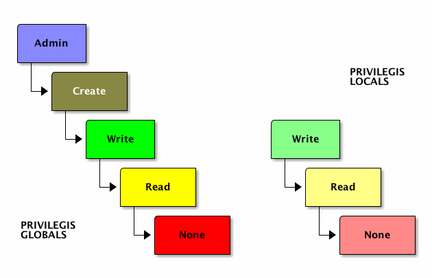

1. Connexió amb bases de dades natives XML
És evident que una base de dades nativa XML (XND a partir d’ara) no és el mateix que una base de dades relacional (BDR a partir d’ara). El magatzem de dades és diferent, tant en estructuració lògica com física:
Des d’un punt de vista lògic, el model de la base de dades és diferent en cada cas: en el cas de BDR la informació es disposa en taules que representen unitats (entitats) i s’estableixen relacions entre dites entitats. En el cas de XND, la informació es disposa en unes estructures jeràrquiques on la informació ja es mostra relacionada, tota entremesclada i resolta. Potser hem de vincular certes parts d’aquests arbres jeràrquics, però la idea és minimitzar aquest tipus de resolucions.
Des d’un punt de vista físic, els arxius que representen les dades estan estructurats de manera diferent, perquè en el cas de les bases de dades BDR el mateix SGBDR (Sistema Gestor de B.D. relacional) construeix i manté les codificacions i estructures internes dels arxius involucrats, tot decidint si una taula de dades ha d’estar partida en un o més arxius, o si aquest partiment es realitza dins d’un únic arxiu combinant múltiples objectes o no. En una XND, pel contrari, l’emmagatzematge és una col·lecció d’arxius XML que poden ser editats i consultats per altres mitjans, i no només a través de l’accés per XND.
És per això que ara la concepció del “servidor de base de dades” també canviarà, i és que ara només s’ha d’encarregar de manipular un o més arxius XML, realitzant consultes i algunes modificacions puntuals. Vist així, la base de dades XND pren més la forma d’un mòdul ple de funcions que no un servidor en el sentit tradicional del terme.
Tot i això, certs productes XND prenen la forma de mòdul o llibreria, mentre que d’altres prenen la forma de servei de xarxa:
XND com a llibreria: Aquí, l’accés i manipulació de la informació no requereix d’una connexió de xarxa, sinó que la llibreria implementa l’accés controlat a les dades de la base de dades XND a través de classes i/o funcions.
XND a través de connexió de xarxa: Seguint el model tradicional, la base de dades XND disposa d’una aplicació servidor que, en ser iniciada, obre un port i permet connexions locals i/o remotes per atendre peticions d’accés sobre la base de dades.
En el cas de BaseX que estudiem, el model utilitzat és el segon i existeix un servidor que ofereix el servei de xarxa per accedir a la base de dades XND.
En concret, BaseX ens ofereix els següent mecanismes per operar amb la base de dades:
Una aplicació gràfica que connecta directament amb la base de dades:
basexguiUna aplicació de consola que connecta directament amb la base de dades:
basexUn servidor que obre un port i accepta connexions remotes:
basexserverUn client de consola que connecta amb un servidor BaseX remot per executar-hi ordres:
basexclient
El que ens interessa aquí és basexserver que, en ser iniciat, obre un port d’accés que permet la interacció amb el servidor de la manera tradicional gràcies a connexions remotes o locals a través del subsistema de xarxa.
Per tant, necessitem iniciar el servidor, i això ho fem des de la consola escrivint el nom de l’ordre del servidor.
També podem iniciar-lo en mode daemon escrivint:
basexserver -SUn cop iniciat el servidor, podem realitzar connexions amb ell des del client basexclient o des de llenguatges de programació com farem nosaltres des de Java.
Si mai hem d’aturar el servidor manualment, ho farem mitjançant l’ordre de consola:
basexserver stopSi hem de fer proves des d’un client remot al servidor amb què volem connectar, necessitarem iniciar sessió remota. Així, per exemple, per connectar amb un servidor BaseX en marxa situat a una IP 192.168.1.1, amb usuari “usuari” i contrasenya “1234”, simplement hem d’escriure:
basexclient -n192.168.1.1 -Uusuari -P1234Així iniciarem una sessió interactiva per executar ordres sobre el servidor XND.
D’igual manera, per realitzar tasques sobre el servidor XND, però des de llenguatges d’alt nivell com Java, necessitarem algun tipus de llibreria que ens ofereixi la infraestructura per a connectar, tot especificant també la IP, el nom d’usuari i la contrasenya d’aquell usuari.
Un cop iniciada una sessió d’execució d’ordres, BaseX és molt semblant a qualsevol altre sistema servidor, tot i que el seu llenguatge té característiques pròpies.
2. Gestió bàsica d’una base de dades BaseX
Veurem aquí tot un seguit d’ordres que són importants per entendre l’operativa bàsica amb bases de dades XND en la seva implementació pròpia BaseX.
Els exemples i passos mostrats són tots des del client basexclient, assumint que un servidor basexserver està en execució i que estem connectats amb un usuari amb prou privilegis com per fer les operacions aquí indicades.
Tingui present que, tot just instal·lat, BaseX configura un usuari amb nom “admin” i contrasenya “admin”, de manera que podem connectar amb dit usuari per iniciar la interacció amb el servidor. Si ho fem en la mateixa màquina que el servidor, no cal indicar res a la línia d’ordres.
A més, es recomana utilitzar el wrapper rlwrap per fer que l’execució de l’ordre sigui més còmoda (memòria de línies antigues, correcte funcionament de les fletxes del cursor, etc.):
$ rlwrap basexclient
Username: admin
Password: admin
BaseX 7.0.2 [Client]
Try "help" to get more information.
> Les ordres que accepta BaseX des d’aquesta interfície són moltes i de natura molt variada:
> help
Try "help [...]" to get info on a specific command.
ADD (TO [path]) [input]
Add document to database.
ALTER [DATABASE|USER] [...]
Alter database name or user password.
CHECK [input]
Open or create database.
CLOSE
Close current database.
COPY [name] [newname]
Copy database.
CREATE [BACKUP|DATABASE|EVENT|INDEX|USER] [...]
Create database, index or user.
CS [query]
Run XQuery and set result as new context set.
DELETE [path]
Delete documents from database.
DROP [BACKUP|DATABASE||EVENTINDEX|USER] [...]
Drop database, index or user.
EXIT
Exit application.
EXPORT [path]
Export database to XML.
FIND [keywords]
Run a keyword query.
FLUSH
Flush database.
GET [option]
Show global option.
GRANT [NONE|READ|WRITE|CREATE|ADMIN] (ON [database]) TO [user]
Grant user permissions.
HELP ([command])
Get help on BaseX commands.
INFO ([DATABASE|INDEX|STORAGE])
Show information on current database.
KILL [name]
Kill user sessions.
LIST ([path])
List databases or documents in database.
OPEN [path]
Open database.
OPTIMIZE (ALL)
Optimize the database.
PASSWORD ([password])
Change password.
RENAME [path] [newpath]
Rename document paths in database.
REPLACE [path] [input]
Replace documents in database.
REPO [DELETE|INSTALL|LIST]
Install, delete or list packages.
RESTORE [name-(date)]
Restore database.
RETRIEVE [path]
Retrieve raw data.
RUN [path]
Run file as XQuery.
SET [option] ([value])
Set global options.
SHOW [BACKUPS|DATABASES|EVENTS|SESSIONS|USERS]
Show server information.
STORE (TO [path]) [input]
Store raw data.
XQUERY [query]
Run XQuery.Tractarem ara les més destacables, tot agrupant-les en diversos grups:
- Ordres de gestió de bases de dades
- Ordres de gestió d’usuaris
- Ordres de gestió de privilegis
- Ordres relacionades amb les còpies de seguretat
- Ordres relacionats amb els índexs
- Ordres relacionats amb les consultes de dades
2.1. Gestió de bases de dades
Podem manipular les bases de dades existents amb totes les ordres que ens ofereix BaseX al respecte, i que no són poques:
| Ordre | Descripció |
|---|---|
ADD (TO [path]) [input] |
Afegir el document a la base de dades |
ALTER DATABASE [...] |
Modificar el nom de la base de dades |
CHECK [input] |
Obre o crea una base de dades |
CLOSE |
Tanca la base de dades oberta actualment |
COPY [name] [newname] |
Copia la base de dades |
CREATE DATABASE [...] |
Crea una base de dades nova |
DELETE [path] |
Elimina documents de la base de dades |
DROP DATABASE |
Elimina una base de dades sencera |
EXPORT [path] |
Exporta la base de dades a un arxiu XML |
FLUSH |
Fixa els canvis pendents a la base de dades |
INFO DATABASE |
Mostra informació de la base de dades activa |
LIST ([path]) |
Llista bases de dades i/o documents |
OPEN [path] |
Obre una base de dades |
OPTIMIZE (ALL) |
Optimitza la base de dades |
RENAME [path] [newpath] |
Canviar camins a arxius de la base de dades |
REPLACE [path] [input] |
Substitueix documents de la base de dades |
SHOW DATABASES |
Mostra informació sobre les bases de dades existents |
Observi les següents ordres que mostren l’ús bàsic d’una sessió d’administració de base de dades XND:
$ rlwrap basexclient
Username: admin
Password: admin
BaseX 7.0.2 [Client]
Try "help" to get more information.
> CREATE DATABASE mondial ./mondial.xml
Database 'mondial' created in 1816.36 ms.
> CLOSE
Database 'mondial' was closed.
> SHOW DATABASES
0 opened database(s).
> LIST
Name Resources Size Input Path
----------------------------------------------------
mondial 1 2165975 /home/felix/mondial.xml
test 2 4645 /home/felix/testDB
2 Databases.
> OPEN mondial
Database 'mondial' opened in 7.47 ms.
> CREATE DATABASE prova
Database 'prova' created in 44.56 ms.
> ADD mondial.xml
Path "mondial.xml" added in 1125.91 ms.
> LIST prova
Input Path Type Content-Type Size
-----------------------------------------
mondial.xml xml application/xml 89486
1 Resources.
> INFO
General Information
Version: 7.0.2
Database Path: /home/felix/BaseXData
Used Main Memory: 1558 KB
Resource Properties
Whitespace Chopping: ON
Indexes
Path Summary: ON
Text Index: ON
Attribute Index: ON
Full-Text Index: OFF
> INFO DATABASE
Database Properties
Name: prova
Size: 1839 KB
Nodes: 89486
Resources: 1
Timestamp: 12.03.2013 08:36:02
Resource Properties
Timestamp: 12.03.2013 08:36:20
Encoding: UTF-8
Whitespace Chopping: ON
Indexes
Up-to-date: false
Path Summary: ON
Text Index: OFF
Attribute Index: OFF
Full-Text Index: OFF
> OPTIMIZE
Database 'prova' optimized in 548.67 ms.2.2. Gestió d’usuaris
Les ordres relacionades amb la gestió dels usuaris són les següents:
| Ordre | Descripció |
|---|---|
ALTER USER [...] |
Alter user password |
CREATE USER [...] |
Createuser |
DROP USER [...] |
Drop user |
KILL [name] |
Kill user sessions |
PASSWORD ([password]) |
Change password |
Les ordres mostrades permeten una gestió simple però efectiva dels usuaris. Observi aquests exemples d’ús:
Primer de tot definirem un usuari nou anomenat “
usuari” amb contrasenya “1234”. Per introduir la contrasenya directament en línia d’ordres de BaseX necessitem calcular el hash MD5 de la contrasenya, perquè ens requereix introduir-la d’aquesta manera. Per tant, primer obtindrem la contrasenya des de consola amb l’einamd5sum:$ echo -n "1234" | md5sum 81dc9bdb52d04dc20036dbd8313ed055 -I aleshores entrem amb l’usuari administrador i creem efectivament l’usuari:
$ rlwrap basexclient Username: admin Password: admin BaseX 7.0.2 [Client] Try "help" to get more information. > CREATE USER usuari 81dc9bdb52d04dc20036dbd8313ed055 User 'usuari' created. > EXIT Enjoy life.Ara intentem comprovar si l’usuari creat pot iniciar sessió:
$ rlwrap basexclient Username: usuari Password: 1234 BaseX 7.0.2 [Client] Try "help" to get more information. > OPEN prova READ permission needed. > EXIT See you.Com veu, es pot iniciar sessió, però no es tenen privilegis d’accés a cap base de dades (més endavant es veurà com modificar privilegis).
Ara definirem un altre usuari que voldrem que sigui administrador de la base de dades i algun altre usuari:
$ rlwrap basexclient Username: ·admin Password: ·admin BaseX 7.0.2 [Client] Try "help" to get more information. > CREATE USER admin2 Password: ·1234 User 'admin2' created. > ALTER USER admin2 Password: ·jA7sh$12@ Password of user 'admin2' changed. > CREATE USER alu01 81dc9bdb52d04dc20036dbd8313ed055 User 'alu01' created. > CREATE USER alu02 81dc9bdb52d04dc20036dbd8313ed055 User 'alu02' created. > CREATE USER alu03 81dc9bdb52d04dc20036dbd8313ed055 User 'alu03' created. > CREATE USER alu04 81dc9bdb52d04dc20036dbd8313ed055 User 'alu04' created. > CREATE USER alu05 81dc9bdb52d04dc20036dbd8313ed055 User 'alu05' created. > CREATE USER alu06 81dc9bdb52d04dc20036dbd8313ed055 User 'alu06' created.Com veu, es mostra com hem de canviar una contrasenya d’un usuari existent, a més de com introduir-la sense que es vegi per pantalla.
Eliminem un usuari que sobra:
> DROP USER alu06 User 'alu06' dropped.
2.3. Gestió de privilegis
La gestió de privilegis en BaseX és força senzilla. En concret, incorpora 5 privilegis que poden aplicar-se sobre qualsevol usuari i sobre les bases de dades.
L’esquema que resumeix el comportament en aquest sentit és el següent:

Observi que els privilegis poden aplicar-se a dos nivells:
Globalment: Afectaran a totes les bases de dades i sobre la gestió mateixa del servidor.
Localment: Afectaran només a una base de dades específica. Si existeixen privilegis locals, aquests sobreescriuen els globals, de manera que els locals prevalen sobre els globals.
A més, dos dels 5 privilegis no poden ser aplicats localment, perquè fan referència a la gestió del servidor.
El significat dels privilegis és força evident:
NONE: Cap privilegiREAD: Es permet accedir a les dades, però sense modificar-lesWRITE: Es concedeix la possibilitat de modificar les dades existentsCREATE: S’atorga la possibilitat exclusiva de crear objectes nousADMIN: Es disposa de tots els privilegis, podent qualsevol ordre
Finalment, tingui present que un privilegi de nivell superior engloba tots els de nivell inferior. Així doncs, si s’atorga el dret de modificació de dades WRITE, també s’està atorgant implícitament en de lectura READ.
Per a manipular els privilegis només existeixen dues ordres relacionades:
| Ordre | Descripció |
|---|---|
GRANT [NONE|READ|WRITE|CREATE|ADMIN] (ON [database]) TO [user] |
Atorga drets a l’usuari |
SHOW USERS (ON [database]) |
Mostra drets dels usuaris |
Posem ara uns quants exemples de com manipular privilegis:
$ rlwrap basexclient
Username: admin
Password: admin
BaseX 7.0.2 [Client]
Try "help" to get more information.
> GRANT ADMIN TO admin2
ADMIN granted to 'admin2'.
> GRANT READ ON prova TO alu*
READ granted to 'alu01' on 'prova'.
READ granted to 'alu02' on 'prova'.
READ granted to 'alu03' on 'prova'.
READ granted to 'alu04' on 'prova'.
READ granted to 'alu05' on 'prova'.Com veu, assignar un dret global només implica dir el privilegi i l’usuari que el rebrà. Per assignar un dret concret sobre una base de dades específica, hem de fer servir la clàusula ON per indicar el nom de la base de dades. A més, pot veure com s’han assignat privilegis en bloc a diversos usuaris, simplement utilitzant el símbol comodí “*”.
Els privilegis poden ser modificats en qualsevol moment. Vegi la següent seqüència d’ordres:
> GRANT CREATE ON prova TO usuari
CREATE permission is unknown.
> GRANT CREATE TO usuari
CREATE granted to 'usuari'.
> GRANT READ TO usuari
READ granted to 'usuari'.
> GRANT WRITE ON prova TO usuari
WRITE granted to 'usuari' on 'prova'.
> GRANT NONE ON mondial TO usuari
NONE granted to 'usuari' on 'mondial'.Com veu, el privilegi CREATE és global i genera un error. Si donem un dret més gran i volem reduir-lo, simplement hem de substituir tornant a definir el nivell de dret per a aquell usuari.
Finalment, en l’exemple mostrat també s’ha indicat com podem tenir drets globals i locals diferents. En aquest cas, l’usuari “usuari” tindrà dret de lectura sobre tota base de dades (si no s’indica una altra cosa a nivell local) i específicament fixem un nivell de dret més elevat en una base de dades i un de menor en una altra. D’aquesta manera, podem fixar un dret per defecte i perfilar un de diferent per a cada base de dades concreta.
Per acabar, podem visualitzar els drets atorgats a nivell global i/o local amb l’ordre SHOW USERS. Seguint amb el nostre exemple:
> SHOW users
Username Read Write Create Admin
------------------------------------
admin X X X X
admin2 X X X X
alu01
alu02
alu03
alu04
alu05
usuari X
8 Users.
> SHOW USERS ON prova
Username Read Write
---------------------
alu01 X
alu02 X
alu03 X
alu04 X
alu05 X
usuari X X
6 Users.2.4. Ordres relacionades amb les còpies de seguretat
Els backups s’emmagatzemen com a arxius de tipus ZIP al directori de dades de BaseX, que en Linux resideix al directori de l’usuari. Per exemple, /home/joan/BaseXData.
Els arxius de backup generats per BaseX inclouen tots els arxius interns de la base de dades tal i com estan indexats i transformats internament per la base de dades.
Les ordres relacionades amb la creació i manteniment de còpies de seguretat per a bases de dades BaseX són les següents:
| Ordre | Descripció |
|---|---|
COPY [name] [newname] |
Copia tota una base de dades |
CREATE BACKUP [...] |
Crea un còpia de seguretat d’una base de dades |
DROP BACKUP [...] |
Elimina una còpia de seguretat |
EXPORT [path] |
Exporta una base de dades a un arxiu XML |
INFO STORAGE |
Mostra informació sobre l’emmagatzematge |
RESTORE [name-(date)] |
Restaura una base de dades |
SHOW BACKUPS |
Mostra informació sobre les còpies de seguretat existents |
Exemples d’ús de la funcionalitat de les còpies de seguretat:
> CREATE BACKUP mondial
Backup for 'mondial' created in 584.35 ms.
> SHOW BACKUPS
Name Size
---------------------------------------
mondial-2013-03-12-15-51-03.zip 913102
1 Backups.
> CREATE BACKUP mondial
Backup for 'mondial' created in 323.53 ms.
> SHOW BACKUPS
Name Size
---------------------------------------
mondial-2013-03-12-15-51-03.zip 913102
mondial-2013-03-12-20-50-43.zip 913102
2 Backups.
> RESTORE mondial
'mondial-2013-03-12-20-50-43.zip' restored in 310.44 ms.
> RESTORE mondial-2013-03-12-15-51-03
'mondial-2013-03-12-15-51-03.zip' restored in 274.67 ms.Observi que és possible restaurar un backup d’una data/hora específica, i no només la darrera còpia de seguretat.
2.5. Ordres relacionats amb els índexs
Els índexs permeten l’execució més ràpida de consultes d’extracció d’informació.
Relacionat amb els índexs, només existeixen 3 funcions bàsiques:
| Ordre | Descripció |
|---|---|
CREATE INDEX [...] |
Crea un índex nou |
DROP INDEX [...] |
Elimina un índex |
INFO INDEX |
Mostra informació sobre els índexs existents |
En BaseX existeixen només 4 tipus d’índexs: TEXT, FULLTEXT, ATTRIBUTES, i PATH. Cadascun d’ells està especialitzat en optimitzar un aspecte diferent de les recerques i filtrat de les dades.
En concret, l’ordre de crear índexs no permet crear índexs sobre nodes, atributs o texts específics; sinó d’una manera genèrica per als quatre tipus esmentats.
L’ordre de crear o eliminar índexs accepten un únic argument que coincideix amb els 4 noms indicats al paràgraf anterior:
CREATE INDEX [TEXT|FULLTEXT|ATTRIBUTE|PATH]
DROP INDEX [TEXT|FULLTEXT|ATTRIBUTE|PATH]Els índexs faran que les consultes de selecció de dades siguin molt més eficients, reduint el temps total d’obtenció dels resultats. La diferència pot arribar, en alguns casos, a nivells de reducció de temps d’execució de consultes XQuery de fins el 1/10.
2.6. Ordres relacionats amb les consultes de dades amb XQuery
Quant a l’execució de consultes XQuery, BaseX ens ofereix les següents ordres:
| Ordre | Descripció |
|---|---|
CS [query] |
Executa una consulta XQuery i fixa el resultat com a context actual |
RUN [path] |
Executa el contingut d’un arxiu com a consulta XQuery |
XQUERY [query] |
Executa una consulta XQuery |
Podem executar una consulta XQuery directament amb l’ordre XQUERY consulta, però també podem tenir-la desada a disc i indicar la ruta amb l’ordre RUN arxiu.
Al marge d’això, sempre podem canviar de “node actiu” (context) amb l’ordre CS acompanyada d’una consulta XQuery que retorni un node del document original. Així doncs, les consultes posteriors prendran aquell context com a punt de partida (ubicació actual) i podrem utilitzar camins relatius dins del document amb consultes XQuery.
> CS //mondial/country[name='Belgium']
> XQUERY count(descendant::city)
10
Query executed in 8.26 ms.
> XQUERY province/city[name='Brussels']/population/text()
951580
> CS /Com veu, per retornar al nivell superior de l’arbre XML, només cal canviar el context a /.
3. Connexió per a consultes XQuery amb Java
BaseX ens ofereix la possibilitat de connectar i utilitzar la seva infraestructura des dels nostres programes Java, i ho fa de diverses maneres que passarem a revisar tot seguit.
3.1. Connexió local directa
BaseX ens permet connectar des de Java directament (sense sistema de seguretat, localment).
Per fer-ho només cal utilitzar les classes Context i XQuery que ofereixen a la seva API:
Programa de prova per al API de BaseX
Test01.java
import org.basex.core.Context;
import org.basex.core.cmd.XQuery;
public class Test01 {
static Context context = new Context();
public static void main(String[] args) {
try {
long t1 = System.currentTimeMillis();
String query =
"doc('mondial.xml')//mondial/country[name='Spain']" +
"/province[name='Catalonia']/city/name";
String result = new XQuery(query).execute(context);
long t2 = System.currentTimeMillis();
System.out.println(result);
System.out.println();
System.out.println("Executat en " + (t2-t1) + "ms");
}
catch (Exception e) {
e.printStackTrace();
}
}
}Com veu, el codi és molt senzill però només permet l’execució de sentències XQuery.
El resultat de la seva execució es mostra tot seguit:
$ javac -cp .:/usr/share/java/basex.jar Test01.java
$ java -cp .:/usr/share/java/basex.jar Test01
<name>Barcelona</name>
<name>Lleida</name>
<name>Tarragona</name>
<name>Hospitalet de Llobregat</name>
<name>Badalona</name>
<name>Sabadell</name>
<name>Terrassa</name>
<name>Santa Coloma de Gramanet</name>
<name>Mataro</name>
Executat en 2455ms3.2. Connexió remota a través de classes client
La diferència és que ara utilitzarem un classe client anomenada ClientSession. Aquesta classe afegeix al mètode anterior el fet de poder connectar a un equip remot indicant usuari i contrasenya.
Programa de prova per al API de BaseX
Test02.java
import org.basex.server.ClientSession;
import org.basex.server.ClientQuery;
public class Test02 {
public static void main(String[] args) {
try {
long t1 = System.currentTimeMillis();
ClientSession sessio =
new ClientSession("localhost", 1984, "admin", "admin");
String query =
"doc('mondial.xml')//mondial/country[name='Spain']" +
"/province[name='Catalonia']/city/name";
ClientQuery clientQuery = sessio.query(query);
String result = clientQuery.execute();
long t2 = System.currentTimeMillis();
System.out.println(result);
System.out.println();
System.out.println("Executat en " + (t2-t1) + "ms");
}
catch (Exception e) {
e.printStackTrace();
}
}
}Observi que aquesta classe permet la interacció directa amb el servidor BaseX, però cal indicar el context arrel amb l’especificació del document XML que agafem de base per a la consulta.
3.3. Mètode a través de classe wrapper
Existeix la possibilitat de construir tota una classe que interaccioni amb la base de dades mitjançant sockets, i així implementar la connexió a baix nivell.
De fet, els mateixos creadors de BaseX ofereixen entre els exemples disponibles per a descarregar una classe anomenada BaseXClient que cobreix aquesta funcionalitat. Aquesta classe implementa la mateixa funcionalitat que el programa basexclient amb què ja havíem treballat.
El codi font de dita classe no es mostra aquí per dos motius: perquè és extens (gairebé 500 línies, moltes d’elles comentaris), i perquè és codi fet per l’equip de BaseX i està disponible a la seva web per a descarregar i també s’adjunta amb els arxius del curs.
Tornant a la funcionalitat que s’aconsegueix, les ordres i sintaxi de les mateixes coincidiran quan s’utilitza des de dita classe en Java.
Un petit exemple d’això és el següent programa, on s’invoca una consulta XQuery sobre la base de dades Mondial, tenint en compte que el servidor existeix, està operatiu, i la base de dades està també creada i operativa. A més, l’usuari amb què fem la connexió serà el compte de l’administrador:
Programa de prova per al API de BaseX
Test03.java
public class Test03 {
public static void main(String[] args) {
try {
long t1 = System.currentTimeMillis();
BaseXClient sessio =
new BaseXClient("localhost", 1984, "admin", "admin");
String query =
"XQUERY doc('mondial.xml')//mondial/country[name='Spain']" +
"/province[name='Catalonia']/city/name";
String result = sessio.execute(query);
long t2 = System.currentTimeMillis();
System.out.println(result);
System.out.println();
System.out.println("Executat en " + (t2-t1) + "ms");
}
catch (Exception e) {
e.printStackTrace();
}
}
}Pot veure com el codi ofereix la possibilitat ara d’escriure una ordre qualsevol. En aquest cas s’invoca l’ordre XQUERY per sol·licitar una consulta d’aquest tipus, però podria efectuar-se qualsevol altre tipus de tasca.
Com a mostra d’això, vegi el següent cas on s’ha afegit l’ordre per obrir una base de dades específica, establint un context i realitzat una consulta XQuery:
Programa de prova per al API de BaseX
Test04.java
public class Test04 {
public static void main(String[] args) {
try {
long t1 = System.currentTimeMillis();
BaseXClient sessio =
new BaseXClient("localhost", 1984, "admin", "admin");
sessio.execute("OPEN mondial");
sessio.execute("CS //mondial/country[name='Spain']");
String query = "XQUERY province[name='Catalonia']/city/name";
String result = sessio.execute(query);
long t2 = System.currentTimeMillis();
System.out.println(result);
System.out.println();
System.out.println("Executat en " + (t2-t1) + "ms");
System.exit(0);
}
catch (Exception e) {
System.err.println("ERROR: " + e.getMessage());
System.exit(-1);
}
}
}Observi com utilitzem la variable de sessió obtinguda per executar ordres BaseX segons convingui. En aquest sentit, vegi que si una instrucció fallés, es llançaria una excepció de tipus java.io.IOException.